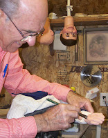

"Someone's been sitting in my chair ..."
10/19/2011
"... and he's still there!"
{kind=link}
{kind=link}

Normally when I paint a pair of hands for a vent figure, I find a way to hang them from my shop ceiling so they can drying evenly on all surface areas. But repainting the hands on an existing figure always presents an extra challenge because they are attached to a cumbersome body. The hands could be removed from the arms, but that's far more work than necessary. I simply let the figure borrow my shop chair for the job, hanging the arms to the rear, over the back of the chair while the paint dries.You can see I have a "supervisor" for this job - standing on his head so he can double check my work from all angles.
Of course, my "customers" have to take a number for this job since I only have one chair for them to use. And the painting is always done near the end of the day when I'm ready to leave the shop so the painter doesn't back into the freshly painted hands and end up with paint on his end - a lesson learned by experience!